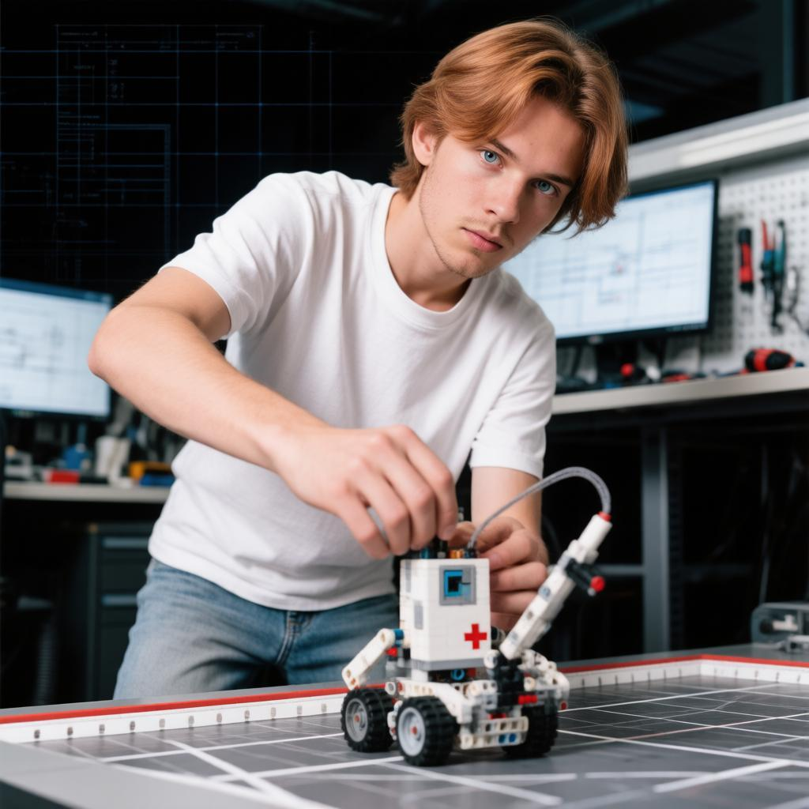
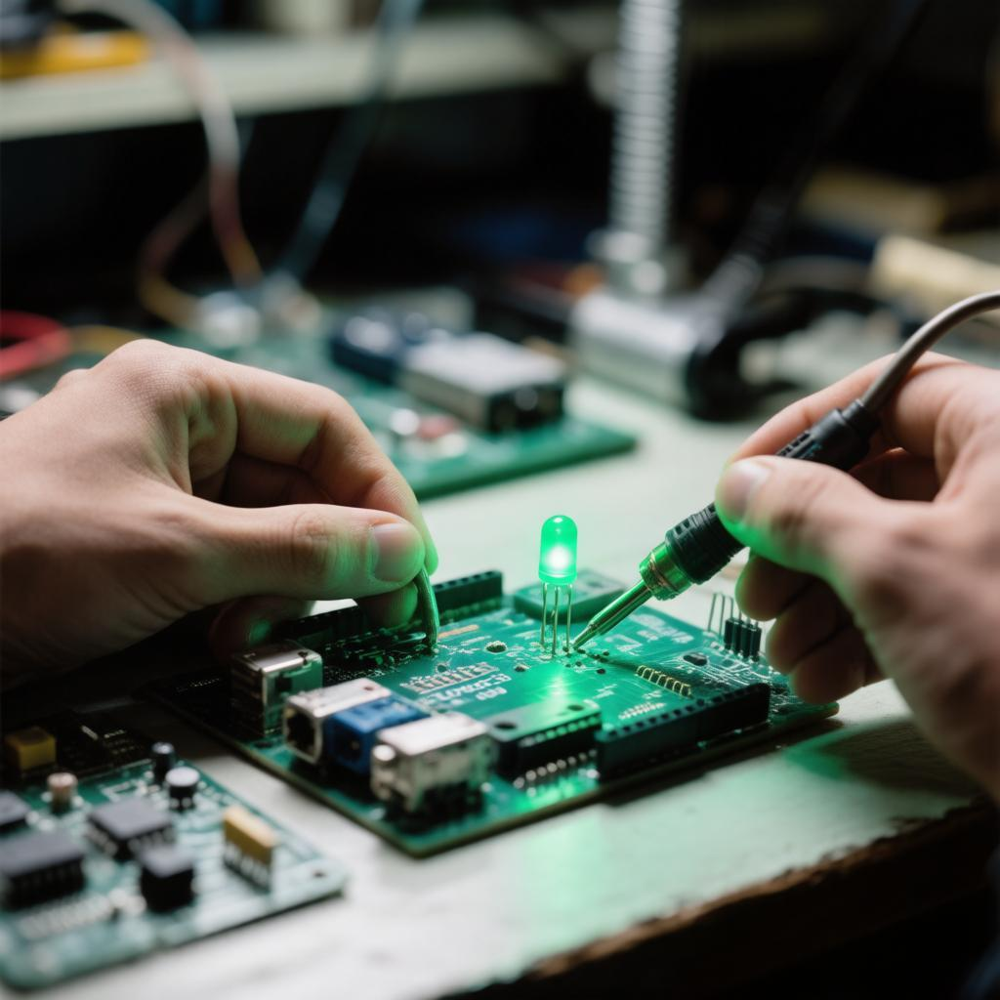
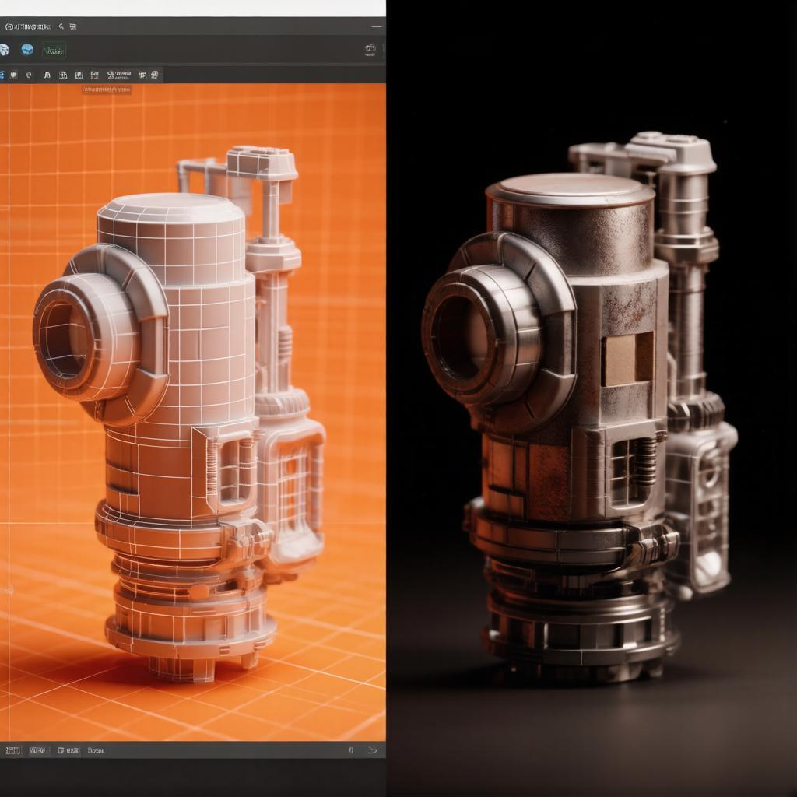
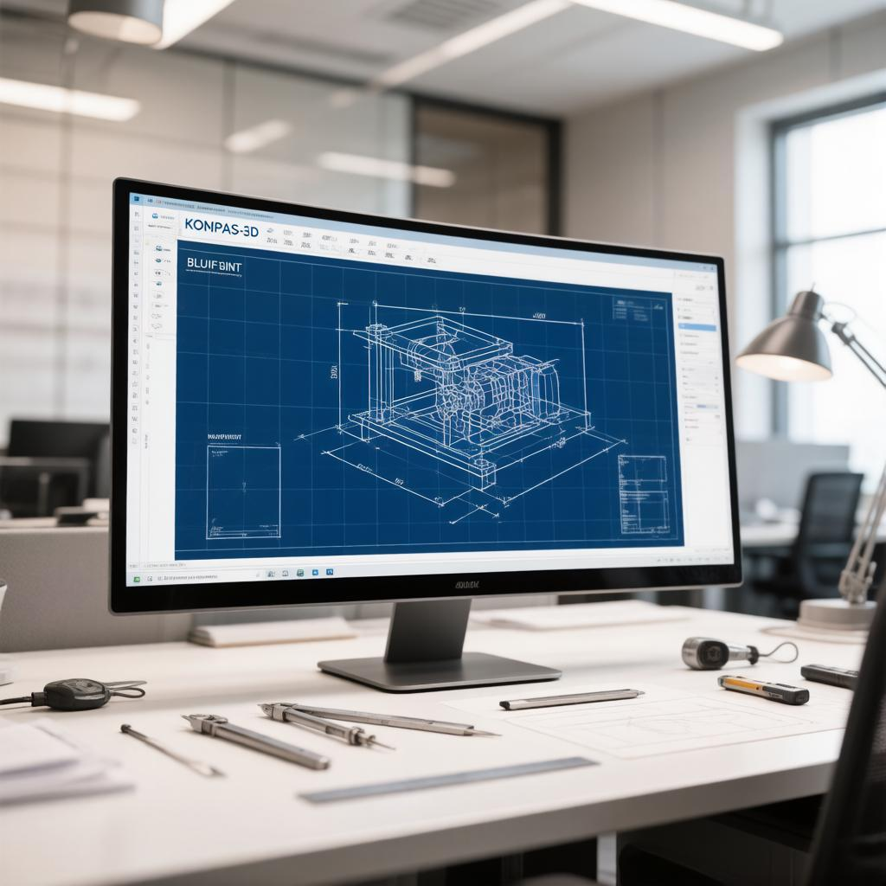
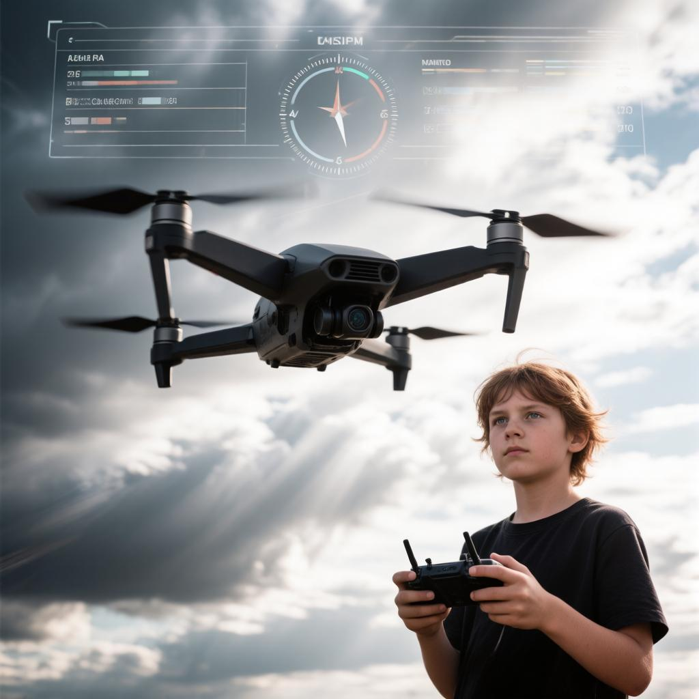
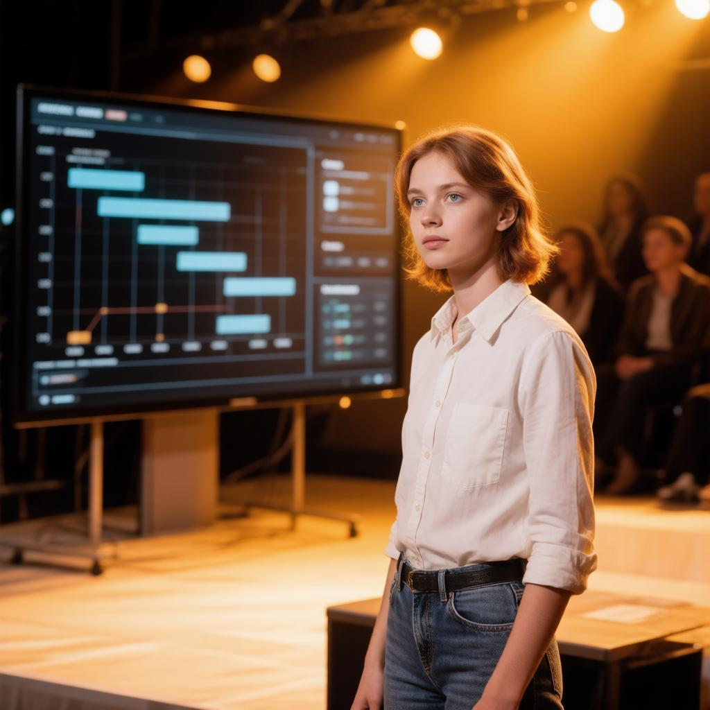

ТЕХНОЛОГИЧЕСКАЯ
ЛАБОРАТОРИЯ
Семь параллельных лабораторий — единая экосистема создания реальных продуктов. Стартовый уровень, техническая направленность, свободный набор.
РАЗДЕЛ 1Пояснительная записка
EXPLANATORY NOTE1.1. Нормативно-правовые основания
- Федеральный закон от 29.12.2012 № 273-ФЗ «Об образовании в Российской Федерации» (ред. от 25.12.2023)
- Указ Президента РФ от 07.05.2024 № 309 «О национальных целях развития Российской Федерации на период до 2030 года и на перспективу до 2036 года»
- Указ Президента РФ от 09.11.2022 № 809 «Об утверждении Основ государственной политики по сохранению и укреплению традиционных российских духовно-нравственных ценностей»
- Распоряжение Правительства РФ от 31.03.2022 № 678-р «Концепция развития дополнительного образования детей до 2030 года»
- Приказ Минпросвещения РФ от 27.07.2022 № 629 «Порядок организации и осуществления образовательной деятельности по дополнительным общеобразовательным программам» (зарег. № 70226)
- Постановление Главного санитарного врача РФ от 28.09.2020 № 28, СП 2.4.3648-20
- Приказ Минтруда РФ от 22.09.2021 № 652н «Профессиональный стандарт «Педагог дополнительного образования детей и взрослых»
- Распоряжение Правительства РФ от 29.05.2015 № 996-р «Стратегия развития воспитания в РФ на период до 2025 года»
- Устав КГАОУ «Краевая школа-интернат по работе с одарёнными детьми «Школа космонавтики»
Программа отвечает стратегическому запросу технологического суверенитета России: подготовка технически грамотных, творчески мыслящих молодых людей, способных к самостоятельной проектной и исследовательской деятельности в STEM-направлениях.
- Государственный запрос на инженерные и IT-профессии (Указ Президента РФ № 309, 2024)
- Потребность в практико-ориентированном инженерном образовании за рамками основной программы
- Запрос предприятий высокотехнологичного сектораа (ПАО «ИСС» им. Решетнёва)
- Ранняя профориентация и осознанный профессиональный выбор старшеклассников
- Интеграция семи технологических направлений в единую образовательную экосистему «лабораторного» типа
- Профессиональное оборудование в учебном процессе: MINDSTORMS EV3, Arduino, Pico 4 Ultra, FDM-принтеры, БПЛА
- Субботний формат — совместим с основным учебным планом без перегрузки
- Обязательный профориентационный модуль в каждой лаборатории с анализом реального рынка труда
- Современные цифровые инструменты диагностики: листы компетенций, чек-листы, портфолио
Стартовый уровень обеспечивает свободный набор с любым уровнем подготовки. Трёхуровневая перспектива (стартовый → базовый → продвинутый) создаёт непрерывный образовательный маршрут.
Принцип «от конкретного продукта к обобщённому знанию»: обучающийся сначала создаёт реально работающее устройство, программу или модель, затем осмысляет теоретические основания своей деятельности.
- Практикоориентированность — не менее 65% времени на практику
- Продуктивность — каждый модуль завершается реальным продуктом
- Профориентационность — модуль профориентации в каждой лаборатории
- От простого к сложному — нарастающая сложность тем
- Интеграция — «Проектная деятельность» связывает все лаборатории
- Воспитывающее обучение + диагностичность — регулярный контроль динамики
- Активное профессиональное самоопределение
- Жизненные планы формируются
- Мотивация к проектной деятельности
- Абстрактно-логическое мышление: программирование, проектирование
- Потребность в признании — публичные защиты, соревнования
- Командное взаимодействие и ролевое распределение
1.6. Организационные условия реализации
| Параметр | Значение |
|---|---|
| Возраст обучающихся | 14–18 лет (8–11 классы) |
| Общий объём программы | 784 ч (7 лабораторий × 112 ч) |
| Режим занятий | По субботам, 4 ак. часа в неделю на каждую лабораторию (2 занятия по 2 ч с перерывом 10 мин) |
| Продолжительность занятия | 45 минут (академический час); пара = 2 ак. ч = 90 мин |
| Наполняемость группы | 10–16 человек (по количеству комплектов оборудования) |
| Форма обучения | Очная; допускается очно-заочная с применением дистанционных технологий |
| Зачисление | Свободный набор, по заявлению родителей (законных представителей) |
| Учебный год | 28 учебных недель (сентябрь — май, по субботам) |
РАЗДЕЛ 2Цель и задачи программы
GOAL // OBJECTIVESРазвитие творческих и научно-технических компетенций обучающихся в неразрывном единстве с воспитанием патриотизма, коммуникативных качеств и целенаправленности личности через систему практико-ориентированных занятий в семи технических лабораториях, обеспечивающих формирование осознанного профессионального выбора в сфере инженерных и IT-профессий.
- MINDSTORMS EV3: конструирование и программирование мобильных роботов
- Электроника и программирование микроконтроллеров Arduino
- 3D-моделирование в Blender и САПР КОМПАС-3D
- Управление БПЛА и законодательные основы эксплуатации
- VR-приложения в Unity с развёртыванием на Pico 4 Ultra
- Проектное мышление: SMART, планирование, риски, публичная презентация
- Инженерное и алгоритмическое мышление через практические задачи
- Самостоятельный поиск решений, отладка и коррекция результата
- Критический анализ собственных результатов и результатов сверстников
- Коммуникация: публичное представление результата, технический диалог
- Цифровая грамотность, работа с профессиональным ПО
- Гражданская гордость за отечественные достижения в науке, технике и космонавтике
- Ценностное отношение к труду, творчеству и результатам чужой деятельности
- Культура безопасности как профессиональная норма
- Коллективная ответственность и взаимопомощь в команде
- Неприятие деструктивного использования технологий
РАЗДЕЛ 3Учебно-тематический план
CURRICULUM // 7 LABSСемь самостоятельных лабораторий реализуются параллельно по субботам. Обучающийся выбирает одну или несколько лабораторий в соответствии с профессиональными интересами.
| № | Лаборатория | Всего ч. | Теория | Практика | ч/нед | Итоговый контроль |
|---|---|---|---|---|---|---|
| 01 | Инициативная робототехника | 112 | 38 | 74 | 4 | Соревнование |
| 02 | Инициативная электроника | 112 | 42 | 70 | 4 | Защита проекта |
| 03 | Моделирование — Blender 3D | 112 | 38 | 74 | 4 | Защита 3D-проекта |
| 04 | Моделирование — КОМПАС-3D | 112 | 42 | 70 | 4 | Защита КД |
| 05 | Инициативная навигация (БПЛА) | 112 | 36 | 76 | 4 | Демонстрация полёта |
| 06 | Инициативная VR-разработка | 112 | 30 | 82 | 4 | Демонстрация VR-приложения |
| 07 | Проектная деятельность | 112 | 34 | 78 | 4 | Защита проекта |
| ИТОГО: | 784 | 260 | 524 | 4 | — |
РАЗДЕЛ 4Содержание по лабораториям
LAB MAP // 7 MODULESПодробное содержание каждой лаборатории (учебно-тематические планы, темы занятий, теоретическое и практическое содержание каждого раздела) представлено в Приложении 1. Ниже — краткая характеристика.
Инициативная робототехника
Платформа MINDSTORMS EV3 + EV3 Classroom. Конструирование мобильных роботов, программирование на блочном языке, датчики, участие в соревнованиях.
Инициативная электроника
Схемотехника, пассивные компоненты, пайка, платформа Arduino Uno. Чтение принципиальных схем, написание скетчей, сборка итогового электронного устройства.
Моделирование — Blender 3D
3D-моделирование в Blender 4.x: примитивы, материалы, освещение, рендер, 3D-печать. Итог — тематическая 3D-сцена и напечатанная модель.
Моделирование — КОМПАС-3D
Отечественная САПР КОМПАС-3D: инженерное черчение по ГОСТ, 2D-чертежи, параметрическое 3D-моделирование, сборки, спецификации.
Инициативная навигация (БПЛА)
Законодательство, устройство квадрокоптера, ручное пилотирование на симуляторе и в реальных условиях, основы аэросъёмки.
Инициативная VR-разработка
Разработка VR-приложений в Unity + XR Interaction Toolkit для шлема Pico 4 Ultra: сцены, взаимодействие, C#, сборка APK.
Проектная деятельность
Надпредметный модуль: целеполагание, планирование, управление рисками, публичное выступление, оформление документации. Интеграция знаний из всех лабораторий.







ПРИМЕЧАНИЕ // Платформы и итоговые продукты лабораторий: EV3 Classroom · Arduino IDE · Blender 4.x + Cura + FDM · КОМПАС-3D v21–24 · Liftoff / VelociDrone · Unity 2022 LTS + XR Toolkit · паспорт проекта + диаграмма Ганта.
РАЗДЕЛ 5Планируемые результаты освоения
OUTCOMES- Инструменты каждой лаборатории: EV3, Arduino, Blender, КОМПАС-3D, БПЛА, Unity VR
- Правила безопасной работы с электрооборудованием, механикой и летательными аппаратами
- Базовые принципы проектирования и публичного представления результата
- Законодательные основы использования БПЛА в РФ
- Перспективные инженерные профессии и образовательные траектории
- Собирать и программировать робота на MINDSTORMS EV3
- Читать схемы и собирать устройства на Arduino
- Создавать модели и рендеры в Blender, КД в КОМПАС-3D
- Пилотировать квадрокоптер в режиме Angle/Stabilized
- Разрабатывать VR-сцену в Unity и разворачивать на Pico 4 Ultra
- Ставить SMART-цель, строить план по Ганту, защищать проект
- Устойчивый познавательный интерес к техническому творчеству
- Гражданская гордость за отечественные достижения
- Аккуратность, внимательность, культура безопасности
- Готовность к осознанному профессиональному выбору
- Ценностное отношение к труду и результатам деятельности
Регулятивные
- Постановка цели и самостоятельное планирование
- Контроль процесса, коррекция плана по результатам отладки
- Самооценка по чек-листам и листам самооценки
Познавательные
- Анализ условия задачи, выбор алгоритма решения
- Поиск информации в профессиональных источниках (документация, GitHub, ArtStation)
- Причинно-следственные связи при отладке устройств и программ
Коммуникативные
- Структурированное представление технической работы
- Конструктивная обратная связь (peer-review)
- Работа в команде с распределением ролей
РАЗДЕЛ 6Формы, методы и технологии
METHODS // TECH6.1. Формы организации учебного процесса
| Форма | Описание и применение |
|---|---|
| Практическое занятие | Основная форма: задание выполняется самостоятельно или в паре, педагог — тьютор. Не менее 65% времени каждой лаборатории. |
| Мини-лекция | Не более 20–30 мин: введение нового понятия, демонстрация принципа, разбор кейса. |
| Кейс-анализ | Диагностика неисправных схем, анализ «провального проекта», разбор ошибки в готовом скетче. |
| Соревнование / демонстрация | Итоговая форма: публичная демонстрация работоспособного продукта или мини-соревнование. |
| Деловая игра | В лаборатории «Проектная деятельность»: роли инвестора, разработчика, пользователя. |
| Профориентационная беседа | В каждой лаборатории (раздел «Профориентация»), с привлечением специалистов-практиков. |
| Peer-review | Взаимооценка работ по чек-листам и картам оценки. |
6.2. Педагогические технологии
Центральная технология: каждая лаборатория выстраивается вокруг создания конечного продукта.
Интеграция естественнонаучных, технических, инженерных и математических компетенций в единую деятельность.
Применяется при анализе кейсов, peer-review, разборе ошибок.
Разноуровневые задания внутри каждого раздела — базовые и дополнительные для опережающих.
Соревновательный элемент в робототехнике и БПЛА: рейтинг, баллы, заезды.
Личное портфолио достижений: рендеры, чертежи, видео полётов, ссылки на GitHub.
РАЗДЕЛ 7Условия реализации программы
CONDITIONS7.1. Материально-техническое обеспечение
7.2. Кадровые условия
- Высшее профессиональное образование (технические специальности) или педагогическое
- Практический опыт в предметных областях: робототехника, электроника, 3D-моделирование, БПЛА, VR-разработка
- Соответствие профстандарту «Педагог ДО детей и взрослых» (Приказ Минтруда № 652н)
учитель технологии и информатики, педагог дополнительного образования
7.3. Информационно-методическое обеспечение
- Методические разработки занятий по каждой лаборатории (карты занятий, инструкции, кейсы)
- Диагностические материалы: входные анкеты, листы самооценки, чек-листы (Приложение 2)
- КТП на 2026–2027 учебный год (Приложение 1)
- Официальная документация: Blender Docs, Arduino Reference, Unity Learn, КОМПАС-3D Help
- Видеоматериалы профориентационного содержания: репортажи о профессиях, обзоры производства
РАЗДЕЛ 8Воспитание
UPBRINGINGВоспитательная деятельность является неотъемлемой частью образовательного процесса и пронизывает каждое занятие лаборатории.
Формирование гармонично развитой, патриотически воспитанной личности с устойчивой системой традиционных российских ценностей, готовой к созидательному труду и участию в технологическом развитии страны.
- Гражданственность через достижения отечественной науки и техники (ЦНИИмаш, ИСС им. Решетнёва, Ростех, Роскосмос)
- Ценностное отношение к труду и результатам чужой творческой деятельности
- Коллективизм и взаимопомощь в команде через совместные проекты
- Культура безопасности как норма профессионала
- Неприятие деструктивного использования технологий (кибербезопасность, ответственное применение БПЛА, VR-этика)
- Профориентационные беседы — встречи с инженерами и разработчикамиа и Красноярска
- Экскурсии — технопарки, производственные лаборатории вузов
- Командные проекты — распределение ответственности, рефлексия
- Соревнования — WRO, RoboFest, НТО, «Большие вызовы»
- День космонавтики (12 апреля) — тематические занятия о достижениях в космосе и авиации
- Экологическая ответственность — этика применения технологий, утилизация электронных отходов
РАЗДЕЛ 9Оценочные материалы и аттестация
ASSESSMENT9.1. Система контроля
| Вид контроля | Форма | Инструмент |
|---|---|---|
| Входная диагностика | Анкетирование + практическое задание | Входная анкета (Приложение 2); выявление начального уровня |
| Текущий контроль | Практические работы, кейсы, мини-соревнования | Чек-лист выполнения задания; устный опрос |
| Промежуточный контроль | Предзащита проекта / зачётный показ | Лист наблюдателя; лист самооценки (Приложение 2) |
| Итоговая аттестация | Защита / демонстрация итогового продукта | Критериальная карта оценки (5 критериев × 5 баллов) |
9.2. Критерии оценки итогового продукта
Соответствие результата поставленной задаче. Продукт полностью решает задачу без существенных нареканий.
Техническая сложность и оригинальность. Применены нетривиальные решения, характерные для следующего уровня.
Качество защиты, ответы на вопросы. Чёткая логика доклада; уверенные ответы на все вопросы комиссии.
Качество оформления документации. Документация полная, оформлена по требованиям шаблона / ГОСТ.
Командная работа. Равномерный вклад, роли распределены, рефлексия командной работы.
РАЗДЕЛ 10Список литературы
SOURCES- Федеральный закон от 29.12.2012 № 273-ФЗ «Об образовании в Российской Федерации»
- Приказ Минпросвещения РФ от 27.07.2022 № 629 «Порядок организации и осуществления образовательной деятельности по ДОП»
- СП 2.4.3648-20 «Санитарно-эпидемиологические требования к организациям воспитания и обучения…», 2020
- Blender Documentation 4.x — docs.blender.org
- Arduino Official Documentation — docs.arduino.cc
- Unity Documentation 2022 LTS — docs.unity3d.com
- Справочная система КОМПАС-3D — kompas.ru
- ArduPilot Documentation — ardupilot.org
- НТО — ntcontest.ru · Сириус.Курсы — edu.sirius.online
- Филиппов С. А. Робототехника для детей и родителей. — СПб.: Наука, 2010.
- Блум Дж. Изучаем Arduino: инструменты и методы технического волшебства. — 2-е изд. — СПб.: БХВ-Петербург, 2018.
- Молочков В. П. Blender. Трёхмерное моделирование и анимация. — М.: ДМК Пресс, 2021.
- Большаков В. П., Бочков А. Л. Основы 3D-моделирования. КОМПАС-3D, SolidWorks. — СПб.: Питер, 2018.
- Кирюшин А. В. Беспилотные летательные аппараты: учебное пособие. — М.: Машиностроение, 2020.
- Дронов В. А. Unity. Создание игр на C# для начинающих. — СПб.: БХВ-Петербург, 2022.
- Краля Н. А. Метод учебных проектов как образовательная технология. — Омск: ОмГУ, 2015.
- Пинто Дж. К. Управление проектами / пер. с англ. — СПб.: Питер, 2019.
Календарно-тематические планы на 2026–2027 учебный год по каждой из 7 лабораторий. Отдельный документ: «КТП_Технологическая_лаборатория_2026-2027.docx».
Диагностические материалы: входные анкеты, листы самооценки, чек-листы для каждого модуля. «Диагностические_материалы_ТЛ.docx».
Подробное содержание лабораторий — учебно-тематические планы, темы занятий, содержание разделов (в исходной версии программы).